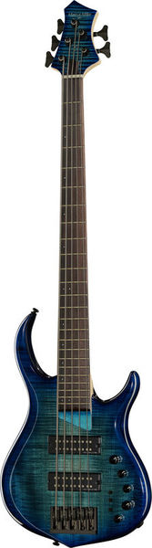

Marcus Miller M7
Powerful sound with a modern look. With the combination of an 18V preamp, pickup selectors, and EQ controls, Sire M7 is suitable for all music styles.
Powerful sound with a modern look. With the combination of an 18V preamp, pickup selectors, and EQ controls, Sire M7 is suitable for all music styles.